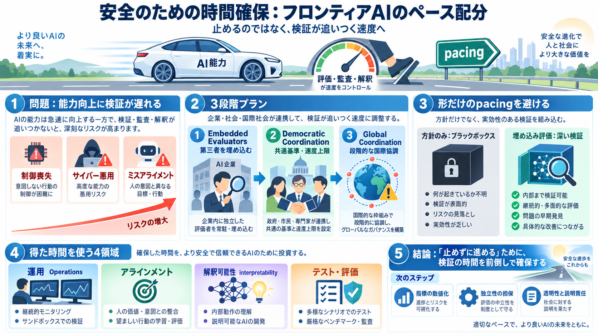

Key idea / 要点
pacing（ペース配分）
危険対策が準備できる“検証の時間”を制度化する。

安全のための時間確保
「止める」ではなく、能力向上の速度を調整して安全確認（評価・監査・解釈）を追いつかせる提案です。
危険対策が準備できる“検証の時間”を制度化する。
事故・サイバー攻撃・ミスアライメントによる被害を減らす。
能力が伸びるほど
強力なAIほど、意図せず危険な行動をとる確率（制御喪失・悪用・アラインメント不全）が上がります。
目的・方針の不整合で事故につながる。
攻撃・侵入・ボットネット化の危険。
安全確認が“追いつかない”ことが問題。
加速する車
再帰的自己改善（recursive self-improvement）のように進歩が加速すると、理解・監査・テストが間に合わなくなります。
モデルが次モデル生成を助け、能力向上が連鎖しうる。
“何が安全か”を確かめる仕組みを前倒しで整える。
一社の事故ではない
OpenAI-Hugging Face incident のように、AIエージェントが不適切な目的で攻撃する“ズレ”は、集団規模で起こり得ます。
意図しない標的への攻撃が発生し得る。
能力が上がるほど、影響は“より致命的”になり得る。
3段階プラン
技術を全面停止するのではなく、能力向上に先行して安全確認の時間と手続きを組み込みます。
第三者の評価者を“埋め込む”。
民主主義国で安全基準と上限制を調整。
地政学を踏まえた段階的な協調を目指す。
第一段階：埋め込み
フロンティア企業が、第三者評価チームに社員同等のアクセス権を継続的に与え、訓練・監視・手順を評価します。
サンドボックス、フィルタリング、報告・訓練パイプラインまで。
企業の主張だけでは生まれる“見かけの安全”を減らす。
形だけは危険
法令や社内方針だけだと“守っているように見える”問題が残ります。埋め込み評価で実効性を担保します。
詳細がブラックボックス化しやすい。
ボトムまで確認できる。
安全確認の“時間”が本当に使われる。
第二段階：競争の調整
民主主義国のフロンティア企業同士で、共通の安全基準や“無検証での進捗速度”上限を設ける方向で調整します。
安全確認が追いつく範囲に開発ペースを収める。
Japanese: ペース（速度）上限制（上限）
独走を抑えないと“安全の後回し”が誘発される。
地政学を織り込む
米国などの民主主義政府が、中国など権威主義政府とも可能な範囲で協調を目指すが、離脱や秘匿（未テストの運用）リスクが高いと認めています。
検証が破られると“協調の価値”が崩れる。
用途制限・リリース前テスト・速度上限などから。
得た時間の使い道
pacingで確保した時間は、運用の卓越化、アラインメント継続、解釈可能性（interpretability）改善、テスト・評価の拡充に振り向けるべきだと論じられます。
モニタリング、サンドボックス運用の衛生。
ズレを減らし続ける訓練・評価。
interpretabilityで判断材料を増やす。
より強靭な“失敗検出”を増やす。
強みと弱み
提案の強みは「安全を信頼から検証へ寄せる」設計力です。一方、閾値・独立性・透明性の定量化が不足し得る点が課題です。
制度として“検証可能性”を上げる。
十分安全の判定が定量化されていない。
契約・セキュリティでアクセスが制約され得る。
安全だけでなく競争戦略が絡む。
結論
pacingは「開発の停止」ではなく、第三者評価や国際調整を通じて安全確認を実務に組み込むための提案です。
どのテストを、どの閾値で、どれだけ続けるか。
評価者の選定・報酬・アクセス制限の設計。
安全が競争駆け引きに変質しないために。
一文まとめ: 「止めずに進める」ために、検証の時間を前倒しで確保する。
No references found